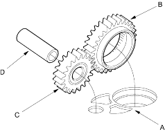
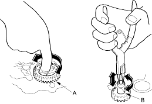
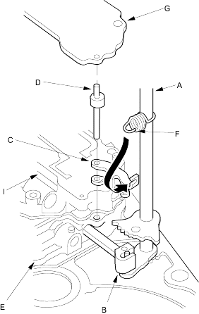

- Install the suction pipe collar in the torque converter housing, if necessary.
- Install the main separator plate (A) and two dowel pins on the torque converter housing. Then install the ATF pump drive gear (B), driven gear (C) and ATF pump driven gear shaft (D). Install the ATF pump driven gear with its grooved and chamfered side facing down.

- Install the main valve body and loosely tighten the five bolts. Make sure the ATF pump drive gear (A) rotates smoothly in the normal operating direction and the ATF pump driven gear shaft (B) moves smoothly in the axial and normal operating direction.

- Install the two dowel pins and the secondary separator plate on the main valve body, then install the secondary valve body. Do not install the bolts on the secondary valve body (three bolts).
- Install the control shaft (A) in the housing along with the manual valve (B).

- Install the detent arm (C) and arm shaft (D) in the main valve body (E), then hook the detent arm spring (F) to the detent arm.
- Install the servo body separator plate (H) on the secondary valve body (I), then install the servo body (eight bolts).
- Install the ATF strainer (one bolt).